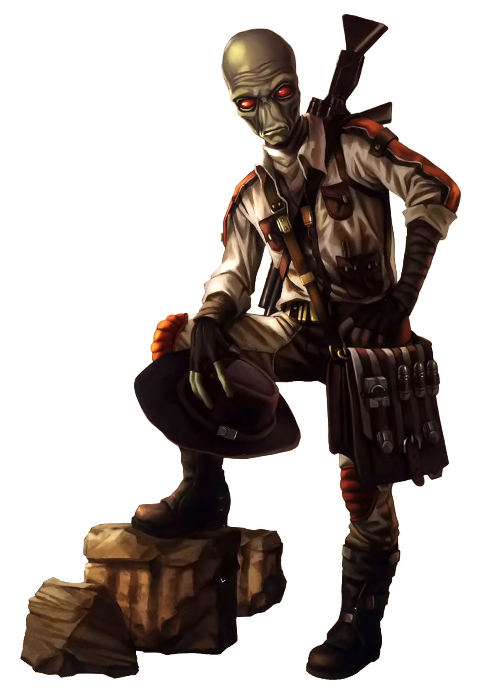

Duros
Special Abilities: Duros begin the game with one rank in Piloting (Space). They still may not train Piloting (Space) above rank 2 during character creation.
Intuitive Navigation: Duros may add [1 Advantage] to all Astrogation checks they make.
The species most often celebrated as having granted the gift of hyperspace travel to the galaxy, Duros are revered as pilots, explorers, and storytellers. They are also widely sought after as ships' engineers and mechanics, which the Alliance needs in abundance.
Descended from reptiles, Duros are bipedal humanoids with large red, slitted eyes; smooth blue-green skin; long fingers; bald, bulbous heads; and no nose (just tiny slits below the eyes that provide their olfactory sense). Their young hatch as larvae from eggs laid by the females, but they are raised in a recognizable family unit. Duros aren't particularly powerful physically, but they possess sharp minds and keen intellects. Though both males and females are bald, other sex characteristics make them easily distinguishable.
Most scholars believe the Duros actually invented the first hyperdrive craft; the species' contributions to interstellar navigation are impossible to overstate. They are inquisitive and adventurous, and they take great pride in their extensive travels throughout the galaxy. It is, in fact, considered polite to refer to any Duros by the honorific "Traveler," such is their passion for astrogation and exploration of the galaxy.
With a history of enslavement by a destructive empire of great technological prowess, the Duros developed a profound thirst for knowledge of the very science used to enslave them. When the time came, they employed all they had learned not only to throw off the shackles of their oppressors, but to reach out to the stars and never look back. Early on, the course of Duros society was charted by a highly regarded monarchy, but as that once-great dynasty fell to corruption, enduring Duros pragmatism led to a corporatocracy that focused on management of assets and development.
Duros tend to be quiet, saying little and observing their surroundings. They can usually be encouraged to tell stories of their families and their people. Possessing exceptional memories for such things, they have an oral history that is rightfully a matter of great pride. In light of the disaster that over-industrialization, combined with numerous devastating attacks by outside forces, brought upon their planet, there's little wonder why they cling tenaciously to a more glorious past.
In the era of the Empire, the Duros have not fared well. Their devastated home has become an occupied territory, their resources managed by the Imperial bureaucracy. At first, these measures were imposed in the name of rescuing the population and maintaining the flow of both ore and manufactured ships to the Core Worlds. Due to the Duros leadership's clear intention to support the Alliance, however, the Empire has militarized its presence and effectively enslaved the Duros people. Many Duros have chosen to scatter to the stars rather than become servants of the Emperor's war machine, and the Alliance greatly values the gifts and knowledge they bring.
Duro was once a lush, green world. It is now completely uninhabitable without extensive biohazard protections due to ecological disasters on an extinction scale. Driven to reach out far and wide to the galaxy, the Duros allowed manufacturing, mining, and production to go unchecked and unregulated. The resultant pollutants and hazardous wastes ultimately drove them from their homeworld to live in massive orbital cities and space stations all around the planet.
Using a syllable-driven written component, Durese (also called Durosian) is a well-known and widely spoken language throughout the Corellian sector and many other Core Worlds. It is one of the foundation languages for the construction of Basic.
It's virtually impossible to meet a Duros who doesn't have some skill with piloting spacecraft, which automatically makes them valuable to the Alliance Navy; many pursue the Pilot specialization of the Ace career. Many are also very gifted mechanics and engineers, finding their way into the Engineer career. Though often quiet and pensive, Duros have a reputation for fearlessness and adventurousness, making them ideal for the struggle against the Empire.